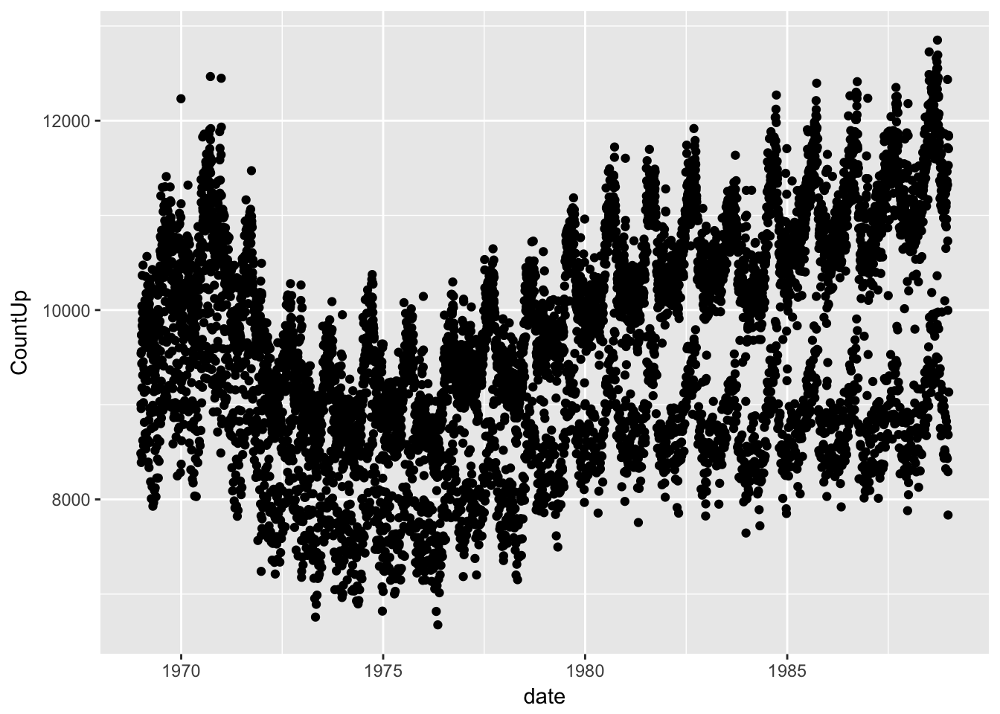
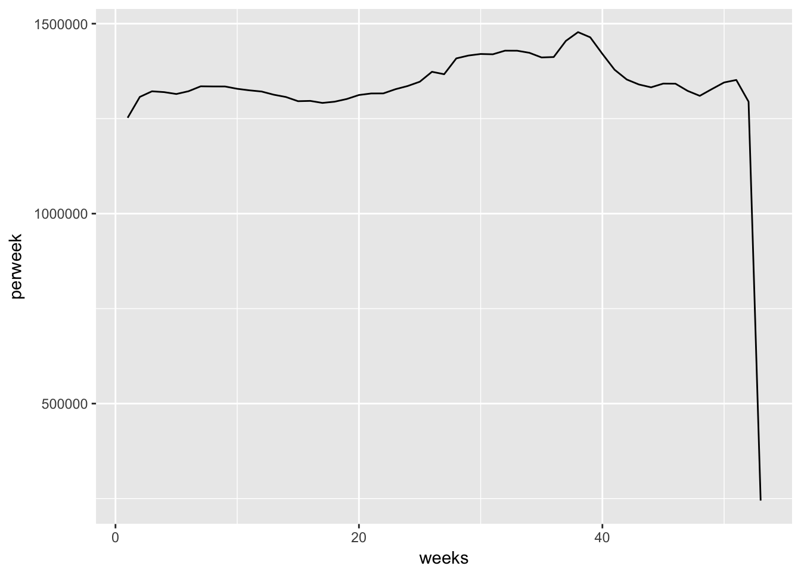
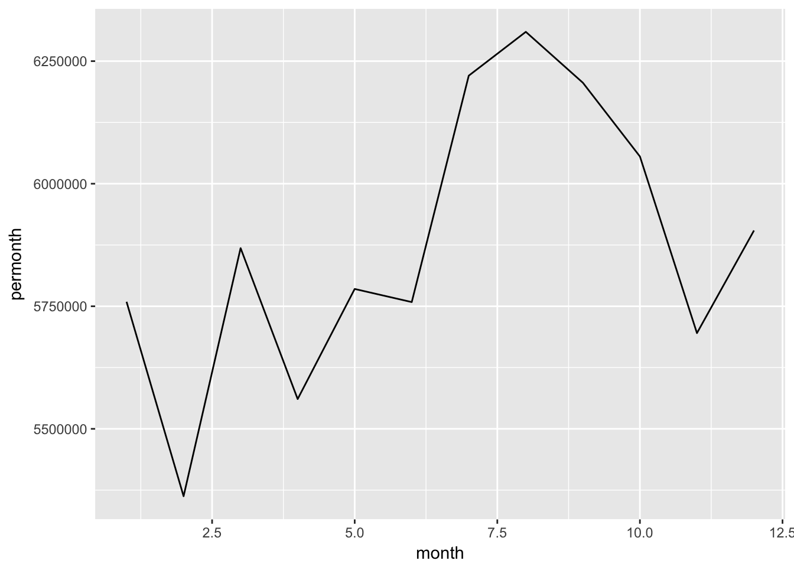
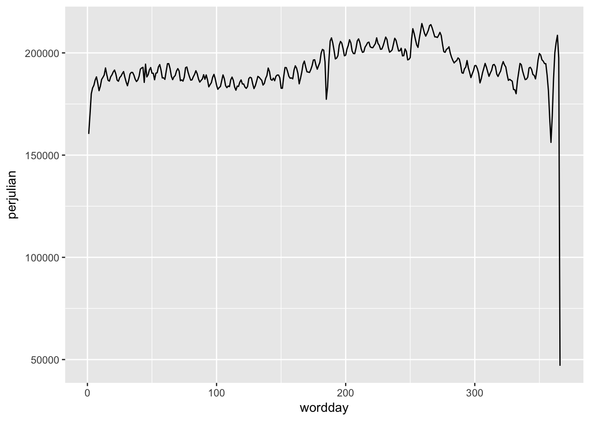
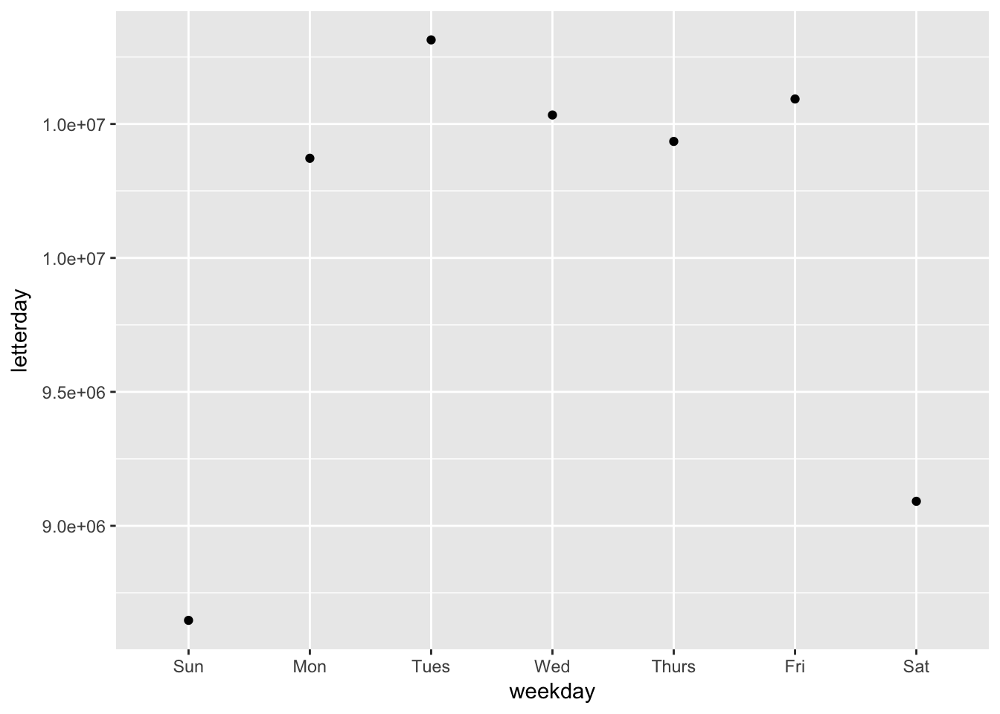
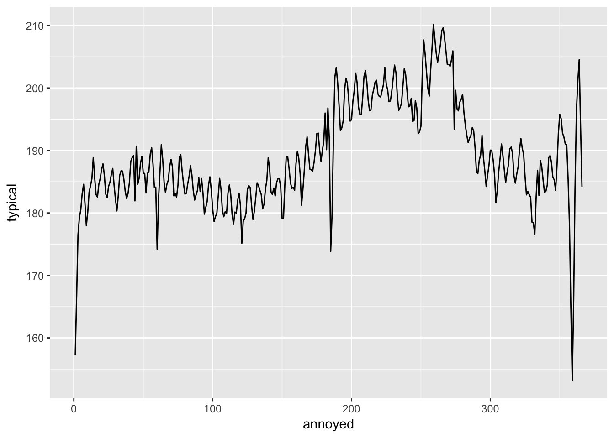
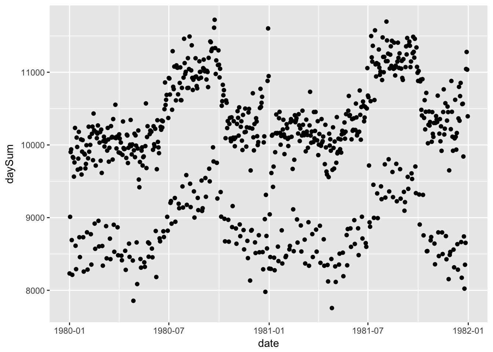
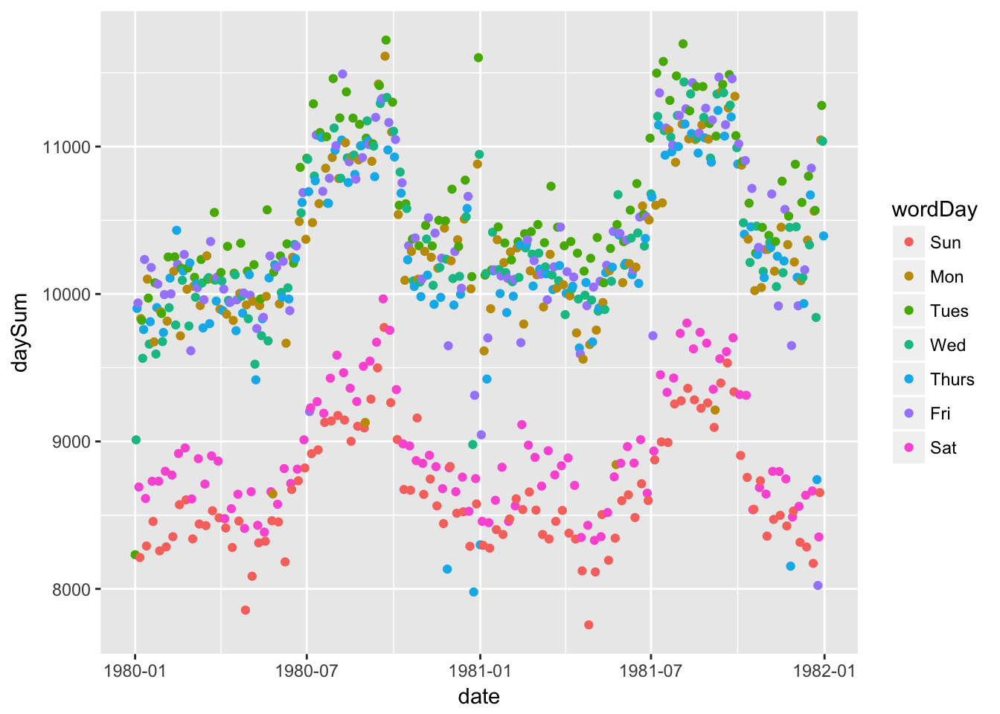

library(dplyr)
library(lubridate)
library(mosaic)## Loading required package: lattice## Loading required package: mosaicData## Loading required package: Matrix##
## The 'mosaic' package masks several functions from core packages in order to add additional features.
## The original behavior of these functions should not be affected by this.##
## Attaching package: 'mosaic'## The following object is masked from 'package:Matrix':
##
## mean## The following objects are masked from 'package:dplyr':
##
## count, do, tally## The following objects are masked from 'package:stats':
##
## binom.test, cor, cov, D, fivenum, IQR, median, prop.test,
## quantile, sd, t.test, var## The following objects are masked from 'package:base':
##
## max, mean, min, prod, range, sample, sum# library(mosaic)
# Birthdays is in the mosaicData package
head(Birthdays)| state | year | month | day | date | wday | births |
|---|---|---|---|---|---|---|
| AK | 1969 | 1 | 1 | 1969-01-01 | Wed | 14 |
| AL | 1969 | 1 | 1 | 1969-01-01 | Wed | 174 |
| AR | 1969 | 1 | 1 | 1969-01-01 | Wed | 78 |
| AZ | 1969 | 1 | 1 | 1969-01-01 | Wed | 84 |
| CA | 1969 | 1 | 1 | 1969-01-01 | Wed | 824 |
| CO | 1969 | 1 | 1 | 1969-01-01 | Wed | 100 |
str(Birthdays)## 'data.frame': 372864 obs. of 7 variables:
## $ state : chr "AK" "AL" "AR" "AZ" ...
## $ year : int 1969 1969 1969 1969 1969 1969 1969 1969 1969 1969 ...
## $ month : int 1 1 1 1 1 1 1 1 1 1 ...
## $ day : int 1 1 1 1 1 1 1 1 1 1 ...
## $ date : POSIXct, format: "1969-01-01" "1969-01-01" ...
## $ wday : Ord.factor w/ 7 levels "Sun"<"Mon"<"Tues"<..: 4 4 4 4 4 4 4 4 4 4 ...
## $ births: int 14 174 78 84 824 100 90 88 32 288 ...# always good to check to see if data looks reasonable
# note that date is in POSIXct formatwith(Birthdays,min(date))## [1] "1969-01-01 UTC"with(Birthdays,max(date))## [1] "1988-12-31 UTC"# see span of dates# Create a data table that adds up all the births for each day across all the states
DailyBirths <-
Birthdays %>%
group_by(date) %>%
summarise(CountUp = sum(births))
# note: do not want state in group_by. Not interested in births by state, looking at births by date# check that same years are covered
with(DailyBirths,min(date))## [1] "1969-01-01 UTC"with(DailyBirths,max(date))## [1] "1988-12-31 UTC"# Plot out daily births vs date
DailyBirths %>%
ggplot(aes(x = date, y = CountUp)) +
geom_point()
# examine seasonality in birth rates
# look at number of births aggregated over all the years by:
# week, month, Julian day
# Week
PerWeek <-
Birthdays %>%
group_by(weeks = week(date)) %>%
summarise(perweek = sum(births))# plot PerWeek
PerWeek %>%
ggplot(aes(x = weeks, y = perweek)) +
geom_line()
# Month
PerMonth <-
Birthdays %>%
group_by(month = month(date)) %>%
summarise(permonth = sum(births))# plot PerMonth
PerMonth %>%
ggplot(aes(x = month, y = permonth)) +
geom_line()
# Julian day
PerJulian <-
Birthdays %>%
group_by(wordday = yday(date)) %>%
summarise(perjulian = sum(births))# plot PerJulian
PerJulian %>%
ggplot(aes(x = wordday, y = perjulian)) +
geom_line()
# look at number of births by day of week
PerDay <-
Birthdays %>%
group_by(weekday = wday(date, label = TRUE)) %>%
summarise(letterday = sum(births))# plot PerDay
PerDay %>%
ggplot(aes(x = weekday, y = letterday)) +
geom_point()
DKEx1 <-
Birthdays %>%
group_by(annoyed = yday(date)) %>%
summarise(typical = mean(births))# plot DKEx1
DKEx1 %>%
ggplot(aes(x = annoyed, y = typical)) +
geom_line()
DKEx2 <-
Birthdays %>%
mutate(month = month(date), day = mday(date)) %>%
mutate(day = month*31 + day) %>%
group_by(day) %>%
summarise(typical = mean(births))# Pick a two-year span in the 1980s
# Extract out the data just in this interval, call MyTwoYears
# I am picking out 1980-1981 for reasons
MyTwoYears <-
Birthdays %>%
filter(year(date) == 1980 | year(date) == 1981)# plot out the births in MyTwoYears day by day
MyTwoYearsBirths <-
MyTwoYears %>%
group_by(date) %>%
summarise(daySum = sum(births))# now let's actually plot
MyTwoYearsBirths %>%
ggplot(aes(x = date, y = daySum)) +
geom_point()
MyTwoYearsBirths2 <-
MyTwoYearsBirths %>%
group_by(wordDay = wday(date, label = TRUE))# more plotting
MyTwoYearsBirths2 %>%
ggplot(aes(x = date, y = daySum, color = wordDay)) +
geom_point()
# read in Holiday data
Holidays <-
read.csv("http://tiny.cc/dcf/US-Holidays.csv") %>%
mutate(date = as.POSIXct(lubridate::dmy(date)))# only need 1980 and 1981 from Holidays
MyTwoHolidays <-
Holidays %>%
filter(year == 1980 | year == 1981)